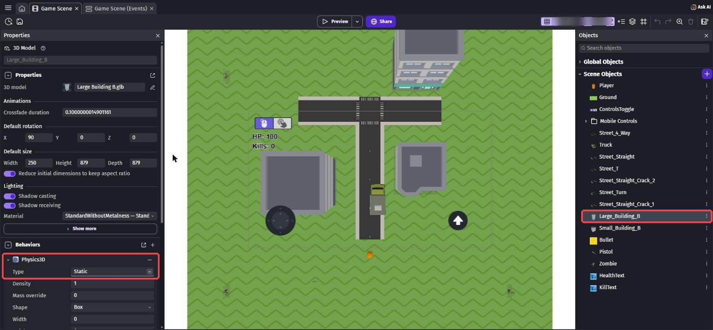
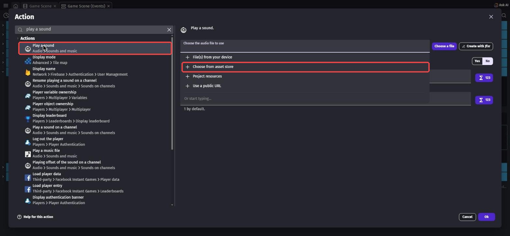
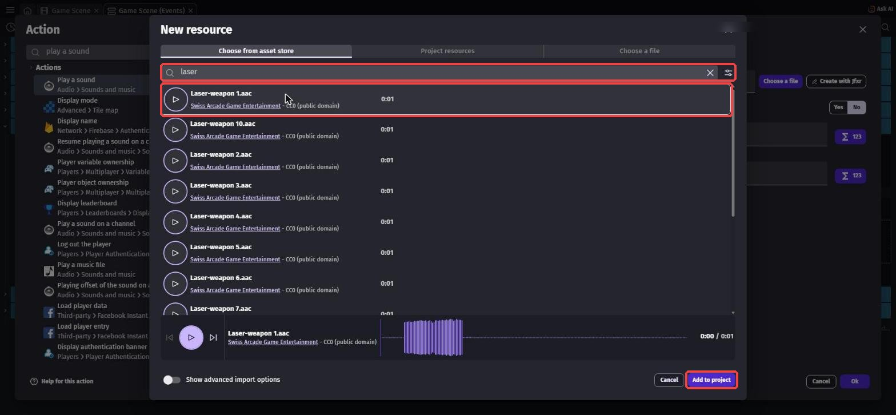
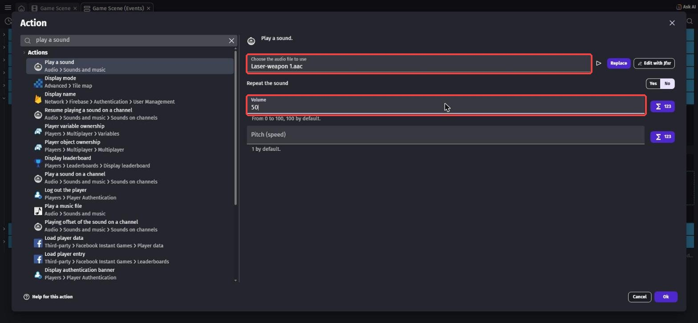
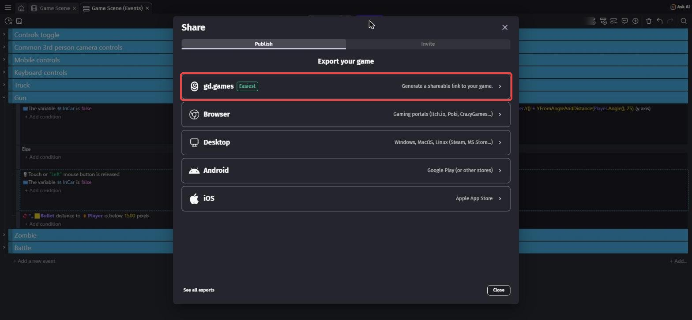

仕上げて発表しよう 〜自分だけの作品に〜
🎯 この章でできるようになること
- 自分のゲームを良くするための「仕上げ計画」を立てられる
- これまで覚えたことを組み合わせて、自分で新しいしかけを作れる
- 人に遊んでもらって、意見をもとにゲームを直せる
- 自分の作品の「こだわり」と「工夫」を、人に伝えられる
※ 第5章までが終わっていない人も大丈夫。
今日は「できているところまで」を自分の作品として仕上げて発表します。
ゾンビをたおすしくみがなくても、街を歩いたりトラックを運転したりできれば立派な作品だよ。
6-1. 今日の進め方
「作る → 遊んでもらう → 直す」を何回まわせるかが、作品の完成度を決める
6-2. 仕上げ計画を立てよう
まずは、今日やりたいことを紙に書き出そう。
ポイントは、「絶対やること」と「時間があればやること」を分けること。
欲ばって全部やろうとすると、発表のときに動かない……ということになりがちです。
アイデア一覧（★が多いほどむずかしい）
| アイデア | むずかしさ | 使う知識（復習する章） |
|---|---|---|
| 道路や建物をふやして、街を広げる | ★ | 第1章 |
| 建物にぶつかるようにする（下のワザ1） | ★ | 第2章（ビヘイビア） |
| 撃つときに音を鳴らす（下のワザ2） | ★ | 第3章 |
| ゾンビの速さ・体力・わく間かくを調整する | ★★ | 第4章・第5章 |
| ほかの銃やゾンビに入れかえる（Swap assets） | ★★ | 第3章・第4章の「やってみよう」 |
| たおすほどゾンビがわきやすくなるようにする | ★★★ | 第5章の「やってみよう」 |
課題1: 自分の「仕上げ計画」を書こう
次の3つを紙に書こう。
書けたら講師に見せてから、作業スタート！
- 絶対やること（1〜2個）
- 時間があればやること（1〜3個）
- このゲームのいちばんのこだわり（ひとこと）
ヒントを見る
「絶対やること」は、30分くらいで終わりそうなものにしよう。
迷ったら、今までの章で友だちや講師に遊んでもらったときの意見を思い出してみて。
遊んだ人が困っていた場所を直すのも、立派な仕上げだよ。
6-3. 仕上げに使えるワザ集
ここからは、仕上げでよく使うワザを紹介します。
全部やる必要はありません。
自分の計画に必要なものだけ使おう。
ワザ1: 建物にぶつかるようにする
今のままだと、主人公もトラックも建物をすりぬけてしまいます。
シーンエディターで一覧の Large_Building_B をクリックし、左の「Behaviors」の「＋」を押します。
physics で検索して「3D physics engine」を選びます。
つけたら、Physics3D の「Type」を「Dynamic」から「Static」（動かない）に変えます。
Small_Building_B にも同じようにつけよう。

Preview で建物に向かって歩くと、かべの前で止まります。
ゾンビは力（フォース）で動いているので、建物をすりぬけたままです（ゾンビらしい、ということにしておこう）。

「Static」（スタティック）は、ぜったいに動かない物。
建物や地面は Static にします。
Dynamic のままだと、トラックでぶつかったときに建物がふっとんでしまいます。
ワザ2: 撃つときに音を鳴らす
イベントシートの Gun グループで、弾を撃つイベント（左クリックをはなした）の「Add action」を押します。
play a sound で検索して「Play a sound」を選びます。
「Choose the audio file to use」の欄をクリックすると、メニューが出ます。
「Choose from asset store」（アセットストアから選ぶ）を押そう。

検索欄に laser と入力すると、レーザー銃の音がたくさん出てきます。
左の ▷ を押すと、音をためしに聞けます。
気に入った音（写真では「Laser-weapon 1」）を選んで「Add to project」を押します。

laser で検索 → 音を選んで「Add to project」（赤枠）もとの画面にもどったら、Volume（音の大きさ）に 50 と入れて「Ok」。
撃つたびに音が鳴るようになります。

50（赤枠）音を選ぶときは「ライセンス」も見よう
音の名前の下に「CC0 (public domain)」や「CC-BY 4.0」と書いてあります。
CC0 は自由に使える素材です。
CC-BY は、使うときに作った人の名前（クレジット）を書く約束がある素材です。
まよったら CC0 のものを選ぼう。
ワザ3: 街を広げる・ゾンビの種類をふやす
道路は「Zombie Apocalypse」、建物は「City Kit (Commercial)」のパックから、第1章と同じやり方で追加して、コピー＆貼りつけでふやせます。
建物をふやしたら、ワザ1の Physics3D も忘れずに。
ほかのゾンビにしたいときは、一覧の Zombie を右クリック →「Swap assets」で見た目だけ入れかえられます。
イベントはそのまま使えるので、こわれません。
6-4. テストプレイしてもらおう
ある程度できたら、となりの人と交換して遊んでもらおう。
遊んでもらうときは、作った人は説明しないで、だまって見ているのがコツです。
説明しないとわからない部分は、ゲームの中でわかるように直すべき部分だからです。
| 遊んだ人に聞くこと | メモ |
|---|---|
| 遊び方は、説明なしでわかった？ | |
| むずかしすぎた場所・かんたんすぎた場所は？ | |
| いちばん楽しかったところは？ | |
| バグ（おかしな動き）はあった？ |
課題2: もらった意見で1か所以上直そう
テストプレイでもらった意見の中から、1つ選んでゲームを直そう。
直したら、もう一度遊んでもらって「良くなった？」と聞いてみよう。
ヒントを見る
「むずかしすぎる」と言われたら、ゾンビをおそくする・わく間かくを長くする・HP のへり方をゆっくりにする、など直し方はいろいろ。
全部の意見に従う必要はないよ。
自分の「こだわり」とぶつかる意見は、取り入れなくてもOK。
6-5. 発表の準備をしよう
発表では、ゲームを遊んで見せながら、次の順番で話すと伝わりやすくなります。
1人の持ち時間は講師が伝えます。
| 順番 | 話すこと | 例 |
|---|---|---|
| 1 | ゲームの名前 | 「〇〇〇という名前のゲームです」 |
| 2 | どんなゲームか・遊び方 | 「ゾンビをたおしながら街で生きのこるゲームです。トラックでひくこともできます」 |
| 3 | いちばんのこだわり | 「建物をふやして、本物の街っぽくしました」 |
| 4 | 苦労したこと・どう解決したか | 「トラックに乗っている間もHPがへるバグがあって、InCar の条件を足して直しました」 |
| 5 | 次にやってみたいこと | 「ボスゾンビを出したいです」 |
課題3（チャレンジ）: 「苦労したこと」を具体的に話そう
発表の4番目「苦労したこと・どう解決したか」を、どんなイベントを、どう直したかまで具体的に話そう。
聞いている人が「自分も同じところでつまずくかも」と思えたら大成功。
ヒントを見る
失敗の話は、発表でいちばん役に立つ部分です。
つまずきポイント集で読んだことや、AIに相談したことを思い出してみよう。
「最初は〇〇だと思ったけど、実は△△だった」という話し方をすると伝わりやすいよ。
6-6. 作品の公開について（任意）
GDevelopには、作ったゲームをインターネットで遊べるように公開する機能があります。
画面の上の真ん中にある「Share」ボタンを押すと、公開のしかたを選ぶ画面が開きます。
いちばん上の「gd.games」（Easiest＝いちばんかんたん）を使うと、遊べるURLが作れます。
公開すると、家族や友だちにURLを送って遊んでもらえます。
ただし、公開は講師の確認が終わってからにしてください。
- ゲームの中やタイトル・説明文に、本名・学校名・住所などを書かない
- アセットストアの無料素材や自分で作った素材だけを使っているか、もう一度確認する
- この教科書で使った「Zombie Apocalypse」（Quaternius）、「City Kit」（Kenney）、効果音は CC0 なので、クレジットは書かなくてもOK。
自分で CC-BY の素材を追加したときは、作った人の名前（クレジット）をゲームの中や説明文に書く - 公開するかどうかは、保護者の方とも相談して決める

6-7. この先の3つの道
全6回の導入はこれでおしまい。
ここから先は、自分で進む道を選びます。
どの道を選んでも、この6回で身につけた「条件 → アクションで考える力」と「自分で原因を探して直す力」が土台になります。
どれを選んでもOK。
大事なのは「自分が何を作りたいか」
| 道 | こんな人に向いている |
|---|---|
| 道1 GDevelopでオリジナル制作 | 今日のゲームをもっと大きくしたい人、まったく新しいゲームを作りたい人 |
| 道2 ほかの技術を自分で学ぶ | Unity・Webサイト・プログラミング言語など、気になる技術がある人 |
| 道3 講師と生成AIで調べながら作る | 作りたいものはあるけど、どの技術を使えばいいかわからない人 |
次の講習までに、どの道を選ぶか、そしてその理由を考えてきてください。
まだ決められない人は、「作ってみたいもの」をひとつ考えてくるだけでもOKです。
6-8. 🚨 つまずきポイント集
いろいろ変えていたら、急にゲームがおかしくなった
原因: 最後に変えたところが原因のことがほとんど。
直し方: まず Ctrl + Z⌘ + Z で1つずつ戻して、どこで直るか確かめよう。
これからは「1つ変えたらPreviewで確認」をくせにしよう。
発表の直前に、新しいことを始めて壊れた
原因: 時間ギリギリの大きな変更。
直し方: 発表の15分前からは、新しいしかけを作るのはやめて、テストプレイと発表練習だけにしよう。
Ctrl + S⌘ + S の保存も忘れずに。
建物にぶつかるようにしたら、トラックがとまってしまう
原因: トラックや道路が、建物と重なる場所に置いてある。
直し方: シーンエディターで、建物とトラック・主人公が重なっていないか確かめよう。
重なっていたら、建物を少し動かそう。
音が鳴らない
原因1: PC やブラウザの音量が0、またはミュートになっている。
→ 右下の音量や、ブラウザのタブのスピーカーのマークを確かめよう。
原因2: Play a sound を、撃つイベントではないイベントに入れてしまった。
→ 「左クリックをはなした」の条件があるイベントに入っているか確かめよう。
💡 15分たっても直らないときは、次の「AIを味方につけよう」の方法で相談してみよう。
発表の日は時間が限られているので、早めに講師を呼ぶのもアリです。
6-9. 🤖 AIを味方につけよう
最終回のAIの使い方は、「作品をもっと良くするための相談相手」。
ただし、作品と発表の主役はキミです。
この章でのAIの使い所
✅ 良い使い方 — 自分で考えたものを、もっと良くするために聞く
- 発表原稿のチェック: 自分で書いた原稿を見せて、わかりにくいところを指摘してもらう
- この先の道の相談: 自分の興味を伝えて、どんな技術があるか教えてもらう（選ぶのは自分）
そのままコピペで使えるプロンプト（AIへの指示文）の例:
GDevelopで作った3Dアクションゲームの発表原稿を書きました。
書き直さずに、「聞いている人にわかりにくいところ」を3つだけ指摘してください。
（ここに自分の原稿をはりつける）
次は「〇〇〇（作ってみたいもの）」を作ってみたいです。
どんな技術や道具があるか、中学生でも始めやすい順に3つ教えてください。
それぞれの良いところと大変なところも教えてください。
🚫 やめておこう
- 発表原稿をAIにまるごと書いてもらう（自分の言葉で話すから、作品の良さが伝わる！）
- 「どの道を選ぶか」をAIに決めてもらう（AIは情報をくれるけど、決めるのはキミ）
- AIの答えを試して確かめずに信じる（AIは古いGDevelopの画面の話をすることもある。
必ず自分の画面で確認）
6-10. ✅ チェックリスト
全部チェックできたら、3Dアクション編 完全クリア！
🎉 スターターから、自分の力でゲームを1本に仕上げました。
ここで身につけた力を持って、次の道へ進もう。
6-11. 📚 もっと知りたい人へ
- 公式Wiki「3D physics engine」（英語） — ワザ1の Physics3D のくわしい説明
- 公式Wiki「Audio」（英語） — 効果音や BGM の鳴らし方
- GDevelop公式Wiki — 「Publishing」のページに公開のくわしい説明がある（公開は講師確認後に）
- GDevelop公式サイト — 公式コース「Make a 3D GTA Game」の続きや、ほかの人が作ったゲームも見つかる